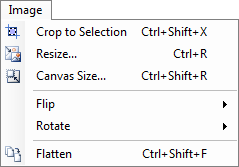
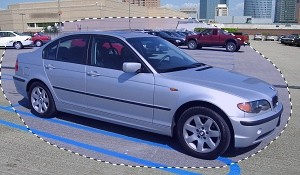
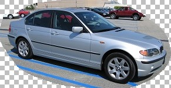
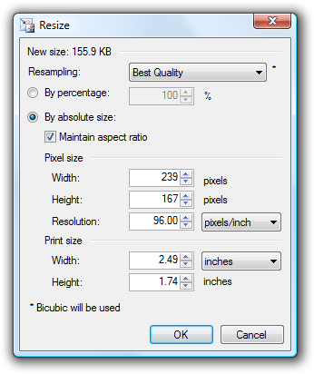
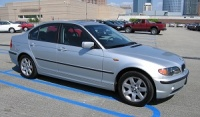
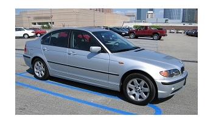
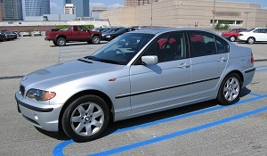

Image Menu
This menu contains commands that affect all layers of the current image. This contrasts to the commands in the Layers menu, which only affect the currently active layer.

-
Crop to Selection
This menu item is only available if a selection is active. Clicking on this menu item will cause the image to be replaced with only the area that was selected. If the selection is not a rectangle or square, then the bounding rectangle around the selection will be used. However, the pixels that were not in the selection will be made transparent.
Original image:

Here we have selected the area we want to crop using the Lasso selection tool:
Here is the new image after having clicked on the Crop to Selection menu item. Note that the bounding rectangle of the selection outline was used to determine the new image's size, but that any pixel that was outside of the selection was made transparent. Also, keep in mind that the checkerboard pattern is used to indicate areas of the image that are transparent. It is not actually part of the image.
 -
Resize
This command lets you change the size of the image. In so doing, the image is either stretched or shrunken to the size you specify. You may specify a relative percentage to resize the image by, or you specify the absolute pixel or print size that you desire. If the "Maintain aspect ratio" option is checked, then typing a new Width value will maintain a proportional Height value, and vice versa.
If you choose to modify the print size of an image, the pixel size will be based on the resolution, which defaults to 96 pixels per inch, which is the same as 37.8 pixels per centimeter. For example, if you specify the image to be 1 inch wide, and the resolution is 96 pixels/inch, then the image will be resized to be 96 pixels wide.
You can use this dialog to affect the print size of an image by adjusting just the resolution. Note that if you only modify the resolution of the image, the pixel size will remain the same and no resampling is performed.
There are multiple types of resampling that you may choose. "Resampling" is the process of computing what the new pixels should be based on what the old pixels are. Some algorithms produce better looking results, but take longer to complete. It is recommended that you use the default option, "Best Quality," unless you have a specific need for and understanding of the other choices (Bilinear, Bicubic, and Nearest Neighbor). Best Quality will automatically choose either Bicubic or Super Sampling depending on the new size that you specify.
Original image:
After being enlarged, using the Resize command:
After being shrunken, using the Resize command:
Depending on the type of image that you are shrinking, you may want to use the Sharpen effect with a value of 1 or 2 after using the Resize command.
-
Canvas Size
This command lets you enlarge or shrink the image canvas without changing the size of the image itself. It works similarly to the Resize dialog, but adds an Anchor selection. If the image canvas is enlarged, the new area will be filled with the secondary color.

Original image:
After enlarging the canvas and using the center anchor point (the secondary color is set to white in this case):
After shrinking the canvas and using the center anchor point:
-
Flip
This submenu allows you to flip the image horizontally or vertically.
Original image:
After being flipped horizontally:

-
Rotate
This submenu gives you several commands for rotating the image by 90, 180, or 270 degrees in either the clockwise or counter-clockwise directions.
Original image:
After being rotated 90 degrees clockwise:

-
Flatten
This takes the multiple layers of an image and combines them into one layer. It is only available if the image has more than one layer.
Copyright © 2007
Rick Brewster, Tom Jackson, and past contributors. Portions Copyright
© 2007 Microsoft Corporation. All Rights
Reserved.